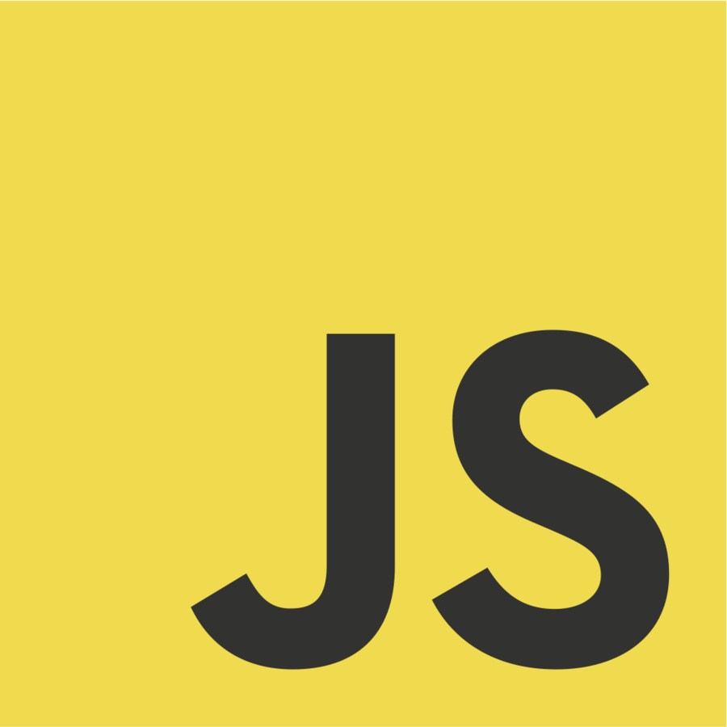
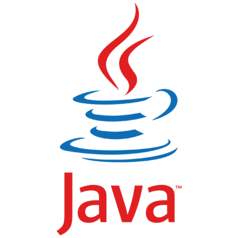
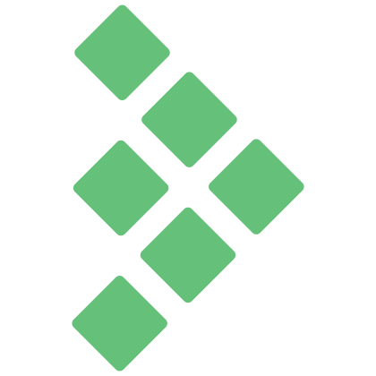
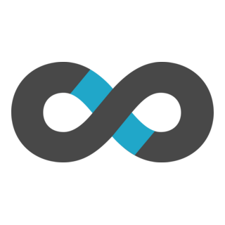
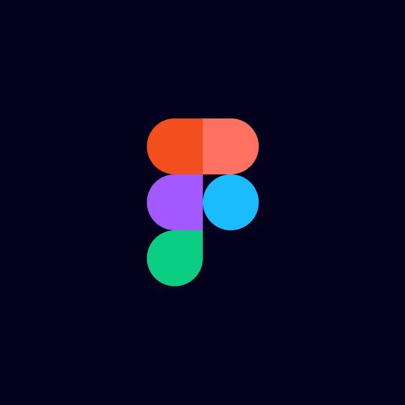
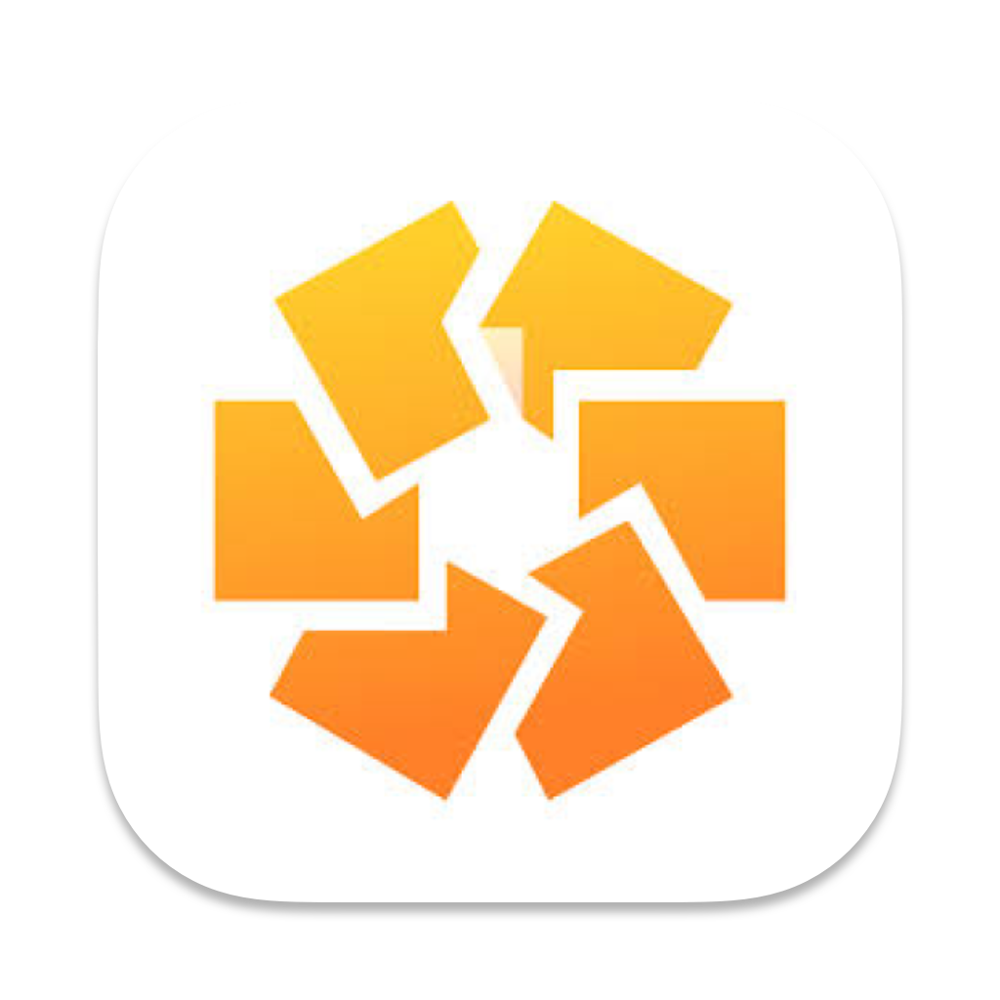
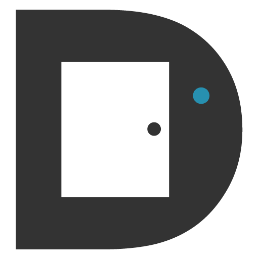
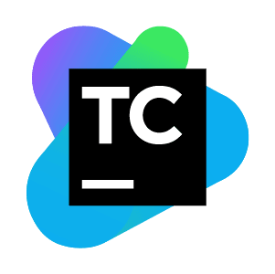

Sergejs Patriks Vosels
Personal statement:
Engineering Manager with a background spanning people leadership and hands-on software engineering. Having led teams in a high-pressure, high-turnover environment, I moved into software to build genuine technical depth - progressing through QA and automation engineering before being promoted to EM at Quinyx. I now lead a distributed mobile squad of 6 at Quinyx, focused on predictable shipping, engineering excellence, and growing the people around me.
Areas of expertise:
- Engineering Leadership: Managing engineers through structured 1:1s, clear expectations, continuous feedback, and accountability for delivery and growth.
- Agile Delivery & Roadmap Alignment: Owning engineering delivery within Scrum and Kanban environments, ensuring technical initiatives are visible and prioritised alongside product work.
- Quality & Reliability: Strengthening release standards, automation practices, and monitoring to maintain stable and reliable systems.
- Stakeholder Collaboration: Partnering with Product, Sales, Customer Support, and Engineering leadership to align engineering work with business priorities.
Skills:
Leadership & Delivery
- Engineering team leadership and development
- Delivery planning and release coordination within Agile environments
- Scope and timeline alignment with Product under constrained resources
- Hiring participation including candidate review and technical interviews
- Process design and improvement (Definition of Ready, Definition of Done, release structure)
- Continuous improvement using delivery, quality, and stability insights
- Supporting team experimentation with AI-assisted development tools
Technical Foundations
- Mobile development environments (iOS and Android ecosystems)
- Test automation strategy and quality engineering practices
- CI/CD pipelines and DevOps workflows
- Observability, monitoring, and production reliability awareness
- Linux environments and scripting
- Self-hosted infrastructure and Raspberry Pi experimentation
Work experience:
Quinyx - London (Sweden based company; Team based in Serbia, Bosnia, London and Germany)
Technologies: 100% cloud based.
Front End: Javascript, Typescript.
Back End: Java, PHP, Go. Mobile: Kotlin, Java, Swift, Objective C.
AI: Claude Code, Granola AI, Gemini, Github Copilot, Cursor.
Other: AWS, Jira, Confluence, Figma, Retrium, Doorbell.io, Gainsight, Superset, TestRail, OpenSearch.
Technologies: 100% cloud based.
FE: 
 BE:
BE: 
AI:

Other:





Engineering Manager 2025 - Present
- Lead a distributed mobile squad of 6 engineers (iOS,Android,Backend,QA), driving predictable delivery through structured 1:1s, clear expectations, and accountability for both delivery and growth.
- Redesigned sprint structures and release workflows, improving release predictability and aligning mobile planning with global company cycles.
- Partner with Product leadership to translate business objectives into technical roadmaps, managing capacity planning and trade-offs under resource constraints.
- Established Quality Gates and release standards that reduced production instability, now adopted across the wider engineering area.
- Lead technical hiring and onboarding for the mobile team, championing AI-assisted development tools to increase developer velocity.
QA Automation Engineer 2023 - 2025
- Led automation initiatives for mobile and backend systems, rebuilding end-to-end test coverage to 52% - work that directly led to promotion to Engineering Manager.
- Introduced structured delivery practices including bug ticket templates, quality metrics dashboards, and contributions to Definition of Ready and Definition of Done standards - practices later adopted across the team.
- Established structured quality tracking and reporting to increase visibility of release readiness and product stability.
- Identified and escalated release-blocking issues, preventing unstable versions from reaching production.
- Contributed to improving quality practices adopted across the wider engineering area.
Technologies: 80% on-premises, 20% cloud based.
Tech stack: C#/.NET, Javascript, Typescript, React Native.
Other: Docker, Teamcity, Ansible, OWASP ZAP, Jira, HotJar.
Technologies: 80% on-premises, 20% cloud based.
FE:
BE: 
Other:



QA Engineer 2021 - 2023
- Designed and implemented a scalable automation framework for a public-facing platform, significantly reducing regression effort and improving release confidence.
- Championed accessibility standards and introduced automated accessibility checks integrated into the CI pipeline, extending quality practices beyond functional testing.
- Integrated security testing (OWASP ZAP) into the CI/CD pipeline, strengthening vulnerability detection and release safety.
- Introduced performance testing to improve system responsiveness and production stability.
- Collaborated with engineers and business stakeholders to refine requirements and support technical decision-making.
Thermostar UK - London
Sales Operations & People Manager 2016 - 2021
- Managed the development of incoming dealer recruits (up to 3 at a time), coaching and supporting them through their initial sales period until operating independently; maintained a near-constant onboarding cycle in a high-churn environment.
- Directly managed telephone caller staff (up to 2 at a time), sustaining team performance through hands-on oversight and rapid onboarding.
- Designed and implemented workflow automation using Zapier, connecting spreadsheets and calendars to streamline booking and scheduling of product demonstrations.
- Worked directly with the company owner to redesign operational workflows, supporting the rapid scaling of field sales activities.
Education
-
Sep 2016 - May 2018
Imperial College London
Masters in Physics
Emitter coupling in plasmonic nano-cavity
-
Sep 2013 - Jun 2016
University of Kent Canterbury
Bachelors in Physics
First Class
Honours
-
Nov 2011 - Jun 2013
Phoenix Academy Sixth Form
A levels
Maths, Physics, Media Studies, Business Studies
-
Sep 2001 - Nov 2011
Riga Classical Gymnasium
GSCE equivalent
Riga
Latvia
Hobbies and interests
Industry Engagement
Attending after work events on tech and leadership.
Production / Directing
Acting, producing and directing.
Sport activities
Actively participating in various sport activities.
Reading
Reading various books and articles around self development.
References
Available upon request
Documents
British and European Union citizen